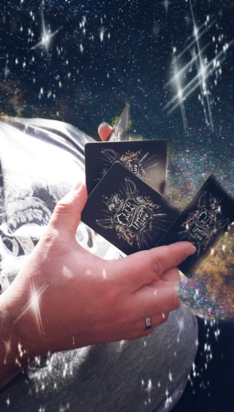

¿Qué es el Cardistry?
Cardistryes el arte o la habilidad artística con cartas. Por eso, esta disciplina engloba cualquier tipo de manipulación con cartas. El flourishing (o floritura) fue el primer término empleado para denominar el tipo de manipulaciones y movimientos con cartas que adornan o tienen alguna utilidad en las rutinas de cartomagia. Pero se debe tener en cuenta que el flourishing no es un término utilizado exclusivamente en la manipulación de cartas ya que también es utilizado para nombrar los adornos en cualquier tipo de arte.
Por otra parte, el XCM o la Manipulación Extrema de Cartas, tal y como su nombre indica, se trata de un manejo de las cartas muy difícil y llamativo. Esto hace que no sea utilizada en rutinas de ilusionismo por lo que su uso se hace en performance o espectáculos de XCM. Tanto una especialidad como la otra son dos estilos diferentes de la disciplina del cardistry. Pero lo mejor para entender de qué se trata esto del cardistry es ver algunos artistas en acción.